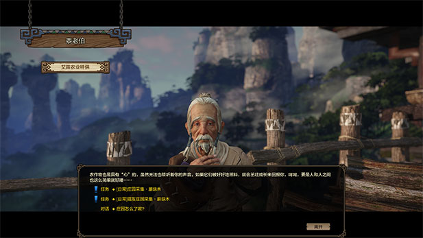
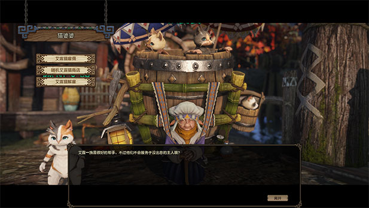
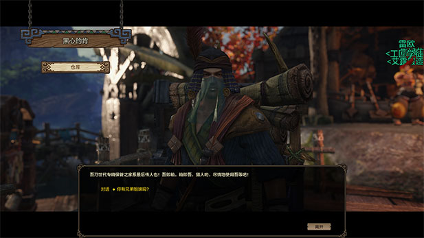
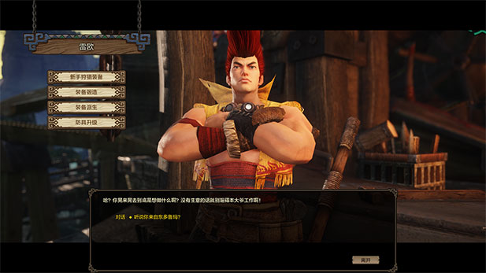
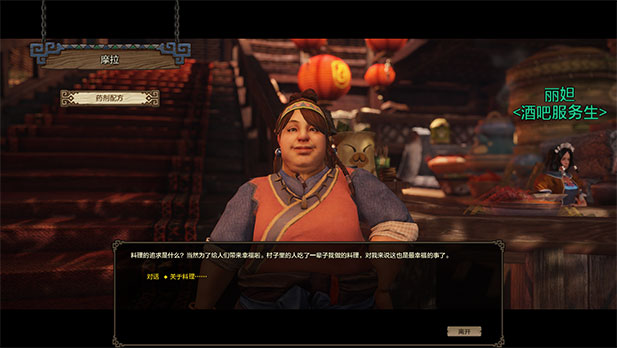
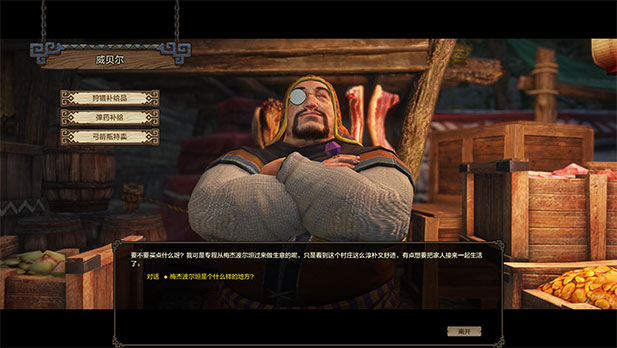

Sends you on various gathering missions.

Sends you on missions to gather things from Farm/Manor, Friends Farm/Manor, or Upgrade cat. Also sells various things for Poop Coins.
You can buy new Cats from this NPC. More info on the Cats page.
Talk to him to access your stash.
Forges and upgrades your weapons and armor
Forges weapons and armor for your faithful Felyne.

Can Enchant (+#) and Awaken your weapons.

Talk to this NPC to revieve your mail.

Sells essential recepies for crafting.

Sells recepies for crafting Jewelry

Sells recepies for crafting potions and meatstuffs.
Buy things you need from this NPC. You can buy trap components here (3 per day).
Sells mysterious things. Ticket tokens can be purchased here (6 per day). Also you can buy the purple weapon enchanting stones here.

Will unlock weapon moves. You can also exchange 2 "?" weapon tokens for a token of your choice and turn your unwanted weapon tokens into "?" tokens. It is better however to sell unwanted tokens in the auction house instead.